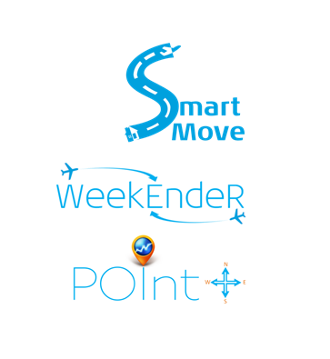

welcome to webfolio - ajayrc
this is work in progress... meanwhile enjoy my other creations
Experimenting Side By Side VR/3D with ThreeJs
(2016)
PREZI - VR related interactive presentation
(2015)
Release Calendar - Best seen in a Mobile
(2014)
jQuery weeklong workshop for Westpac bank associates
(2013)
Created proposals/prototypes of following ideas:
Smart Move – your personal travel guide to deliver door to door service
Weekender – a personalized annual holiday calendar for frequent flyers
POInt – a Point Of Interest guide to get the best out of a city tour

Hackathons:
tNooz hackathon - Proactive Interface for Lufthansa
(2015)